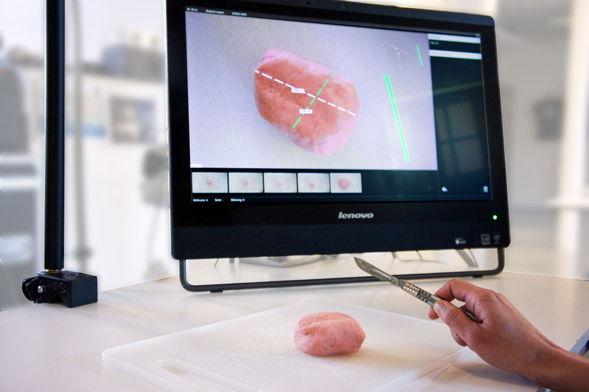
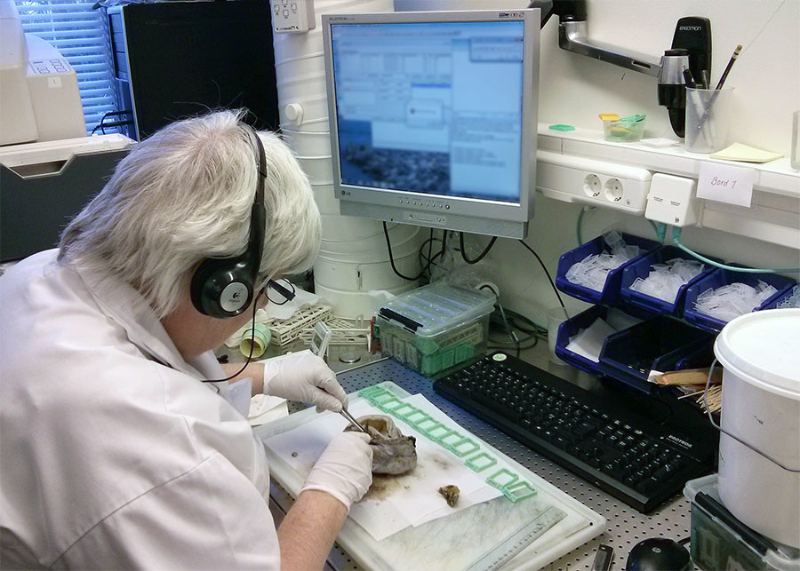
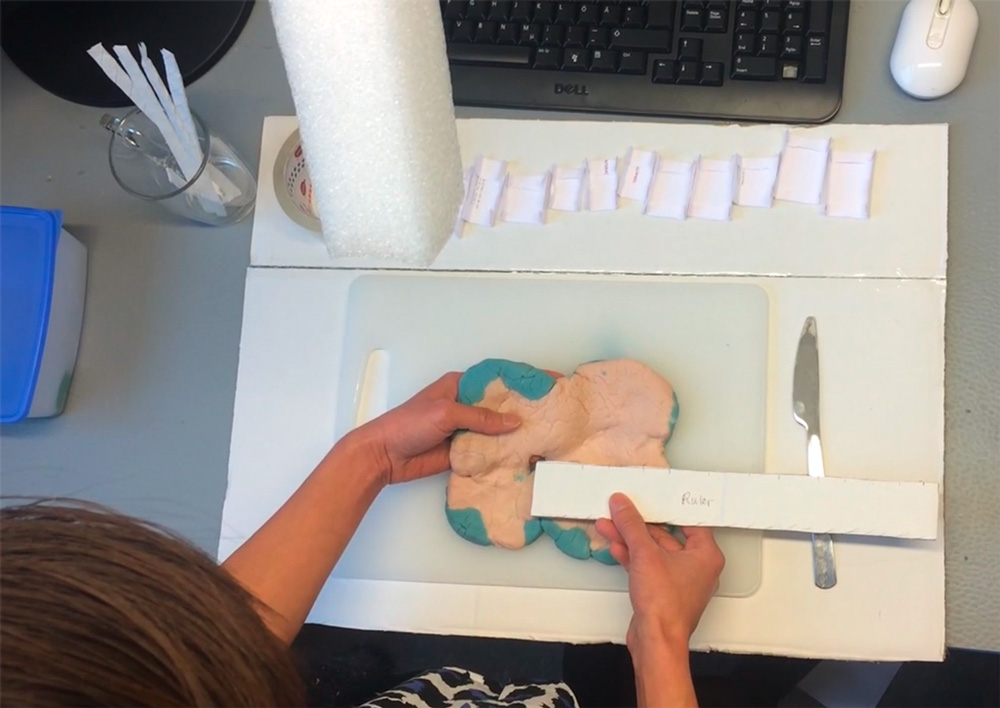
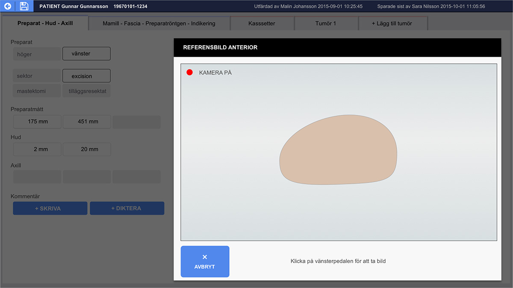

Medical workstation redesign
Tissues suspected of cancer are removed via surgery and processed in a pathology grossing procedure prior to microscopic preparation. Findings from the pathology technician during this procedure are moving towards complete digitalization - aka DIGITAL PATHOLOGY. The diagnosing physician uses this information to make an appropriate cancer treatment plan.
My role
Interactive Institute designed and exhibited an experimental prototype called DigiPat which combines augmented reality and digital photographs. My responsibility as lead interaction designer in the next phase of the project was to improve upon this prototype, particularly the workstation's physical ergonomics.
Understanding
My first step was to understand the context where pathology takes place, by observing and interviewing a pathology technican in the hospital. I augmented my research by watching pathology procedure videos on YouTube, as well as trying out our prototype to evaluate its weaknesses and strengths.
Exploration
In order to improve the existing prototype, I wanted to examine how well would this prototype fit into their existing workflow. What are the effects of introducing more technology into this environment? Was augmented reality more of a distraction than a help? What was the desired outcome of moving towards a paper-free workflow from the beginning? By taking photos instead of drawing diagrams as they do today, what new problems do we introduce?
I sketched out several variations of concepts using paper and video storyboards.

Insights
My background in industrial design influences the way that I work - I think it is important to make and use physical prototypes, even if rough. An insight gained from this play-acting was that the tissues are rather soft and sloppy, unlike the first rounds of user tests with bananas, which are firm and keep their shape. This influenced the design for the next prototype, which focused on functionality for creating and identifying orientation of tissues when later viewed in photographs.
Evaluation
Using qualitative design methods to evaluate the prototype, we asked users what they thought through semi-structured interviews as well as observed how they used it. The strengths of the prototype are that photographs convey more information than text and hand drawn schematics, and the ability to annotate blocks (submitted specimens) on photographs. What we found as opportunities for improvement:
- "Live tracking" view from the camera appears to be distracting
- Can block annotations provide links to further information?
- Can we convey the relationship and differences between photographs?
- Can the text and images recorded be better integrated?
- Hand drawn schematics are advantagenous in highlighting intent - can we improve communicatation of the technologist's findings to the pathologist?
Refining the prototype: Interface concept
After evaluating the prototype, we propose an interface where photos could be placed in relation to its orientation, with the ability to create additional types of annotations directly on the image or view linked information overview (text, numerical, sample slide, and detail photos). The magnetic tracking functionality could be extended to replace the computer mouse.
Through our proposed interface design, we argue that the goal with digitalisation should not be in capturing increasing amounts of data and images, but to draw upon how we can record and display this in a thoughtful, intelligent way for higher quality communication which makes use of pathology professionals’ experience and creative problem solving.